Project 2 · CS180
Fun with Filters and Frequencies
Part 1.1
Convolutions from Scratch
I first implemented convolution using four nested loops. For each padding mode, I computed the required padding and output dimensions, then slid the kernel across the padded image. At every position, I multiplied the corresponding kernel and image values and summed the products to obtain one pixel in the output. I then implemented a more efficient two-loop version, replacing the two innermost loops with NumPy array operations: at each position, I extracted the corresponding image patch and multiplied it directly by the kernel.
Implementation and Runtime Comparison
Four-loop implementation
def conv_2d_4loops(img, kernel, Mode="same"):
h_img, w_img = img.shape
print(f"Input shape = {img.shape}")
h_kernel, w_kernel = kernel.shape
k = (w_kernel - 1) // 2
print(f"Kernel size = {h_kernel} * {w_kernel}")
kernel_f = np.flip(kernel, axis=(0, 1))
w_pad = 0
h_pad = 0
if Mode == "same":
print("Mode = same")
w_pad = (w_kernel - 1) // 2
h_pad = (h_kernel - 1) // 2
elif Mode == "full":
print("Mode = full")
w_pad = w_kernel - 1
h_pad = h_kernel - 1
else:
print("Mode = valid")
pad_img = np.pad(
img,
pad_width=((h_pad, h_pad), (w_pad, w_pad)),
mode="constant",
constant_values=0,
)
h_padimg, w_padimg = pad_img.shape
h_out = h_padimg - h_kernel + 1
w_out = w_padimg - w_kernel + 1
out = np.zeros((h_out, w_out))
for x in range(w_out):
for y in range(h_out):
for v in range(h_kernel):
for u in range(w_kernel):
out[y, x] += (
kernel_f[v, u] * pad_img[y + v, x + u]
)
return outTwo-loop implementation
def conv_2d_2loops(img, kernel, Mode="same"):
h_img, w_img = img.shape
print(f"Input shape = {img.shape}")
h_kernel, w_kernel = kernel.shape
k = (w_kernel - 1) // 2
print(f"Kernel size = {h_kernel} * {w_kernel}")
kernel_f = np.flip(kernel, axis=(0, 1))
w_pad = 0
h_pad = 0
if Mode == "same":
print("Mode = same")
w_pad = (w_kernel - 1) // 2
h_pad = (h_kernel - 1) // 2
elif Mode == "full":
print("Mode = full")
w_pad = w_kernel - 1
h_pad = h_kernel - 1
else:
print("Mode = valid")
pad_img = np.pad(
img,
pad_width=((h_pad, h_pad), (w_pad, w_pad)),
mode="constant",
constant_values=0,
)
h_padimg, w_padimg = pad_img.shape
h_out = h_padimg - h_kernel + 1
w_out = w_padimg - w_kernel + 1
out = np.zeros((h_out, w_out))
for x in range(w_out):
for y in range(h_out):
target = pad_img[y:y + h_kernel, x:x + w_kernel]
out[y, x] = np.sum(target * kernel_f)
return outRuntime Comparison
| Method | Runtime | Relative to Two Loops |
|---|---|---|
| Four loops | 8.839 s | 9.79× slower |
| Two loops | 0.903 s | Baseline |
scipy.signal.convolve2d | 0.195 s | 4.63× faster |
9×9 Box Filter and Finite Differences
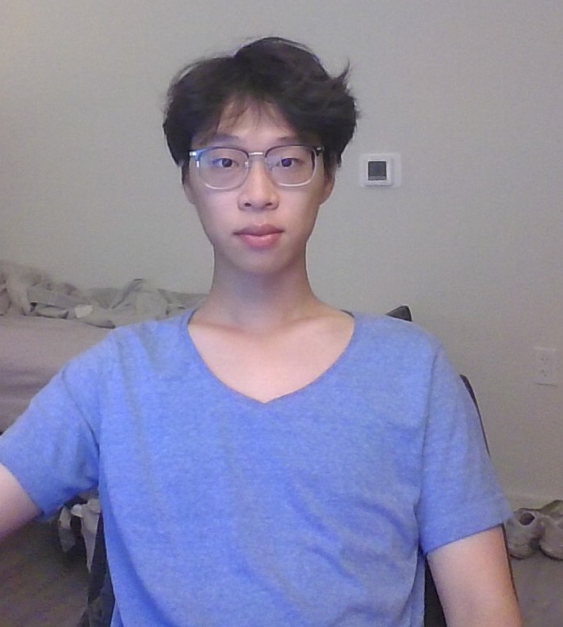


After applying the 9×9 box filter, the image becomes noticeably smoother and slightly blurred. Averaging each pixel with its neighbors suppresses small intensity variations and high-frequency details, but it also softens sharp boundaries. The $D_x$ filter measures left-to-right intensity changes, so it responds most strongly to vertical edges. For example, the control panel on the wall is reduced to three prominent vertical lines. In contrast, $D_y$ measures top-to-bottom intensity changes and therefore emphasizes horizontal edges, causing the same panel to appear mainly as horizontal lines. Together, the two derivative images show that an edge appears most strongly in the derivative taken perpendicular to its orientation. Zero padding can also create artificial responses along the image boundary because pixels near the border are compared with padded zeros rather than neighboring image content.
Part 1.2
Finite Difference Operator
To estimate the image derivatives, I convolved the cameraman image $I$ with the finite-difference filters $$D_x=[1,0,-1]\ \ D_y=D_x^T$$ producing the signed responses $G_x=I*D_x$ and $G_y=I*D_y$. Because these responses contain both positive and negative values, they cannot be displayed directly as a standard 8-bit grayscale image. For each response $G$, I first computed $M=\max(|G|)$ and then applied the symmetric linear mapping $$V=255(G+M)/(2M)$$ Under this mapping, the most negative response $-M$ becomes black (0), a zero response becomes middle gray (127.5), and the most positive response $M$ becomes white (255). This preserves the sign of the derivative in the visualization, so edges with opposite intensity-transition directions appear on opposite sides of middle gray. The mapping is used only to display $G_x$ and $G_y$; the original signed values are retained for the gradient calculation.


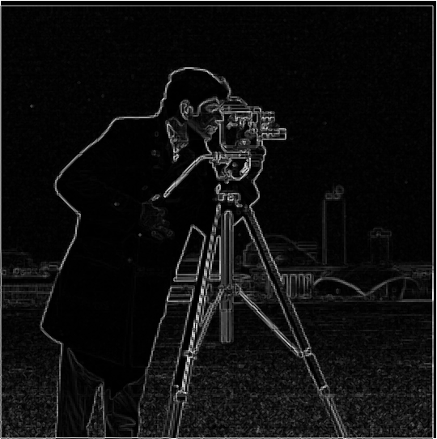


Threshold Selection
I first tried a threshold of 0.15. At this low threshold, the grass produces many noisy edge responses because its texture contains rapid changes between light and dark pixels. The buildings in the background are also clearly visible. Although these responses are consistent with the intensity variations in the original image, they make the result too cluttered for a clean contour map. Increasing the threshold to 0.29 removes much of the grass texture and many of the background buildings. The buildings disappear relatively quickly because their intensities are similar to that of the sky, so their gradient magnitudes are weaker than those of the main foreground edges. Raising the threshold further to 0.45 eliminates most of the remaining noise, but it also removes weaker parts of the cameraman's outline, causing several contours to become thin or discontinuous. I therefore selected 0.29 as the best compromise: it suppresses most of the unwanted texture while preserving a clear and reasonably continuous outline of the main subject.
Part 1.3
Derivative of Gaussian Filters
A 9×9 Gaussian kernel with $\sigma=1.5$ smooths the image before differentiation. The same two operations are combined into derivative-of-Gaussian filters.

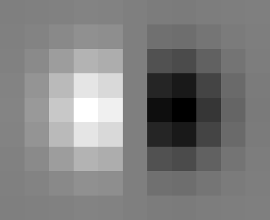
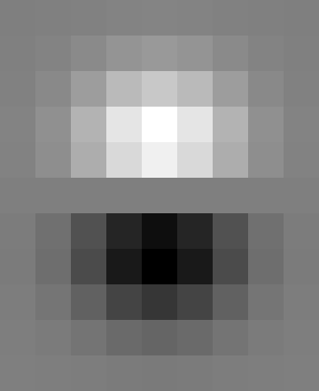
Smooth, Then Differentiate


Single-Convolution DoG Result


Comparison and Verification
Gaussian smoothing removes high-frequency content before differentiation, making intensity changes more gradual and suppressing noise that the finite-difference filters would otherwise amplify. Compared with the result from Part 1.2, many isolated responses disappear—especially the speckled edges on the cameraman's clothing—while the main silhouette becomes cleaner and more continuous. The remaining contours are also slightly broader because smoothing spreads each sharp transition across neighboring pixels.
Blurring first and then differentiating is equivalent to convolving the image directly with derivative-of-Gaussian filters. Gaussian smoothing is itself a convolution, so associativity gives $$(I*G)*D_x=I*(G*D_x)$$ $$(I*G)*D_y=I*(G*D_y)$$ I therefore formed the two DoG filters by convolving the Gaussian kernel with $D_x$ and $D_y$, then convolved them with the image to obtain the gradient magnitude shown above. The two approaches agree to floating-point precision: the maximum interior difference is $1.06\times10^{-15}$. Because smoothing produces a cleaner gradient distribution, I retuned the binarization threshold to preserve the principal contours while discarding the remaining weak responses.
Part 2.1
Image Sharpening
Unsharp masking separates an image into a Gaussian low-frequency component and a high-frequency residual, then adds a scaled residual back to the original: $$I_{sharp}=I+\alpha(I-G*I)$$.

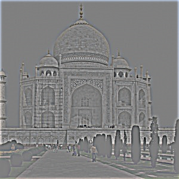
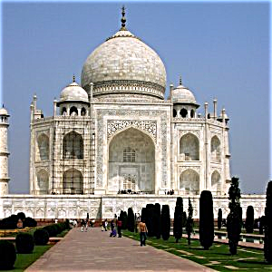
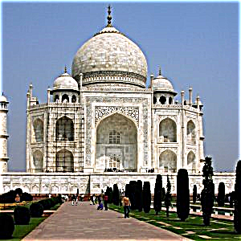
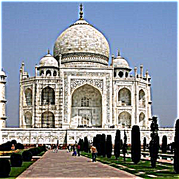
Let the original image be $f$ and the Gaussian kernel be $g$. Gaussian smoothing gives
\[f_{\mathrm{blur}}=g\ast f.\]
The high-frequency residual is therefore
\[f_{\mathrm{high}}=f-f_{\mathrm{blur}}=f-g\ast f.\]
Adding a scaled version of this residual back to the original produces
\[\begin{aligned}f_{\mathrm{sharp}}&=f+\alpha\left(f-g\ast f\right)\\&=(1+\alpha)f-\alpha(g\ast f).\end{aligned}\]
If $\delta$ denotes the identity impulse kernel, for which $\delta\ast f=f$, the entire operation can be written as a single convolution:
\[f_{\mathrm{sharp}}=\left[(1+\alpha)\delta-\alpha g\right]\ast f.\]
Therefore, the equivalent sharpening kernel is
\[k_{\mathrm{sharp}}=(1+\alpha)\delta-\alpha g.\]
The parameter $\alpha$ controls how strongly the existing high-frequency residual is amplified; it does not create genuinely new detail. With $\alpha=1$, edges and architectural details become clearer while the result remains relatively natural. Increasing $\alpha$ to 2 and then 3 produces progressively stronger local contrast, but it also exaggerates dark and bright responses. In the strongest result, the dark spots on the roof expand into hole-like regions, while fine tree texture is clipped or merged into flat, rectangular blocks of color. The sky also develops an unnatural color shift. These artifacts occur because strong high-frequency amplification creates overshoot and can push color-channel values outside the displayable range, where clipping removes tonal detail.
F1 Sharpening Comparison
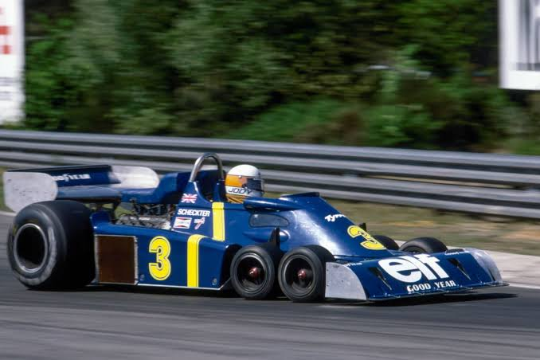
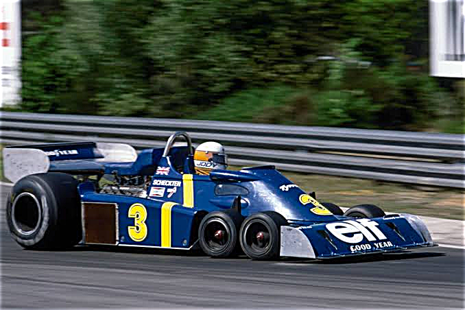
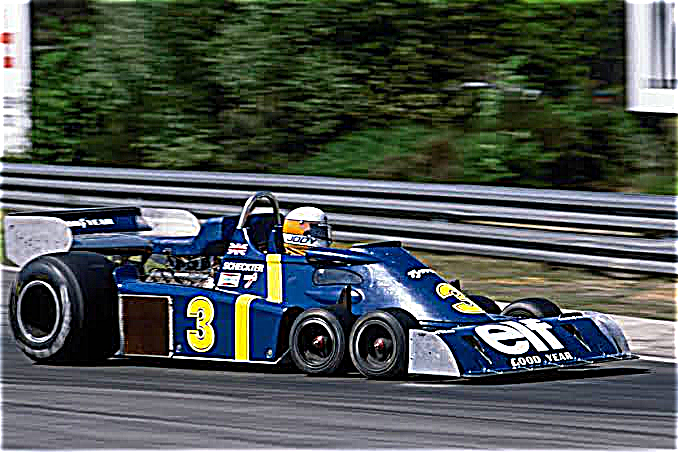
Blur and Re-sharpen Evaluation
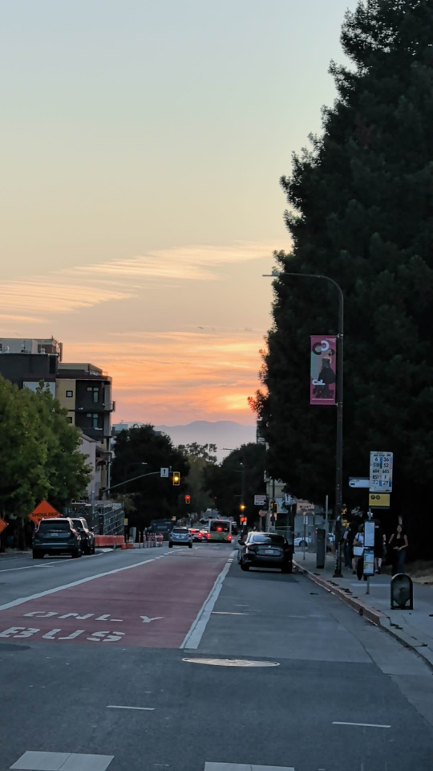
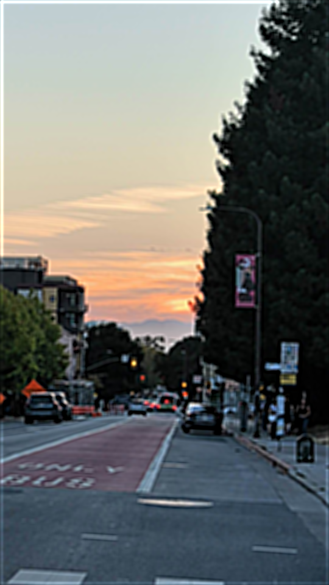
Information Loss
After re-sharpening, the contours of the tree trunk, the edges of the canopy, and the horizon appear clearer because their remaining contrast has been amplified. However, fine branches and leaves, as well as the specific text on the sign, are still not legible. These small details are represented primarily by high spatial frequencies, which are strongly attenuated or lost during Gaussian blurring as neighboring pixel values are averaged together. Consequently, the high-frequency residual computed from the blurred image no longer contains enough information to reconstruct them. Increasing the sharpening strength only amplifies the high-frequency content that remains—including noise and possible halos around strong edges—rather than recreating the missing structures. Thus, the re-sharpened image can look crisper, but it cannot truly recover details that were removed by the blur.
Part 2.2
Hybrid Images
A hybrid image combines the low frequencies of one aligned image with the high frequencies of another so its interpretation changes with viewing distance.
Derek · Low-frequency component


Nutmeg · High-frequency component


Hybrid result · Near and far viewing

Alignment and Cutoff Choices
I aligned Derek and Nutmeg using the centers of their eyes as corresponding points, then adjusted the scale and rotation so that the main facial features occupied similar positions. This alignment is important because the hybrid illusion is strongest when the eyes, nose, and overall face shape overlap; otherwise, the two subjects appear as separate transparent images rather than one coherent face. I selected $\sigma_{\mathrm{low}}=7$ for Derek because it removes most fine facial detail while preserving the broad head shape and illumination needed for the far-distance interpretation. For Nutmeg, $\sigma_{\mathrm{high}}=3$ suppresses the large smooth regions while retaining recognizable edges around the eyes, ears, nose, and whiskers. At close range, these sharp high-frequency features dominate and Nutmeg is easier to see. When the image is reduced or viewed from farther away, the fine cat details are averaged out and Derek's low-frequency structure becomes dominant.
Fourier-domain Interpretation
In the Fourier domain, low-frequency components are concentrated near the center of the spectrum, while high-frequency components appear farther from the center. After low-pass filtering the portrait, most of the outer high-frequency content is suppressed and becomes dark, leaving only the low-frequency energy near the center. For the cat image, high-pass filtering removes the low-frequency content around the center, making high-frequency features such as edges and fine textures more prominent. The spectrum of the final hybrid image contains information from both sources: the clearly visible cross-shaped pattern near the center comes primarily from the portrait's low-frequency component, while the brighter responses farther from the center correspond to the cat's high-frequency details.
Color variants · Near and far viewing
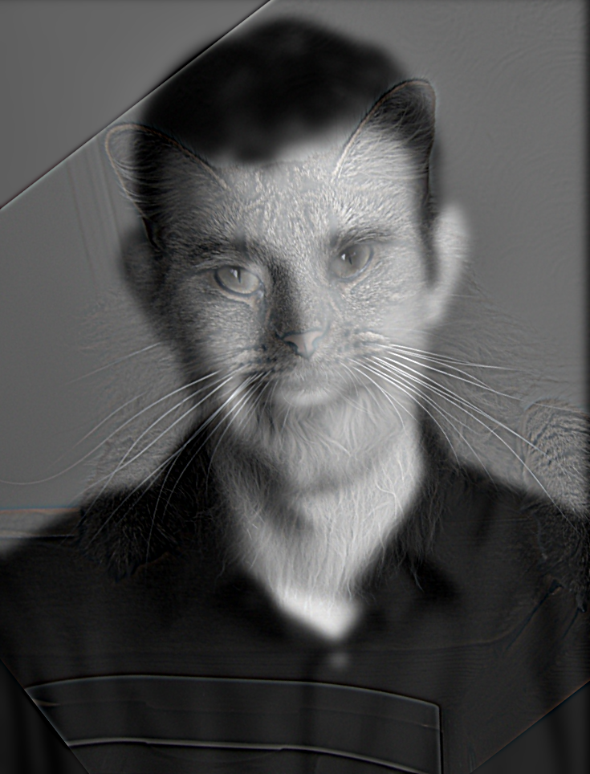
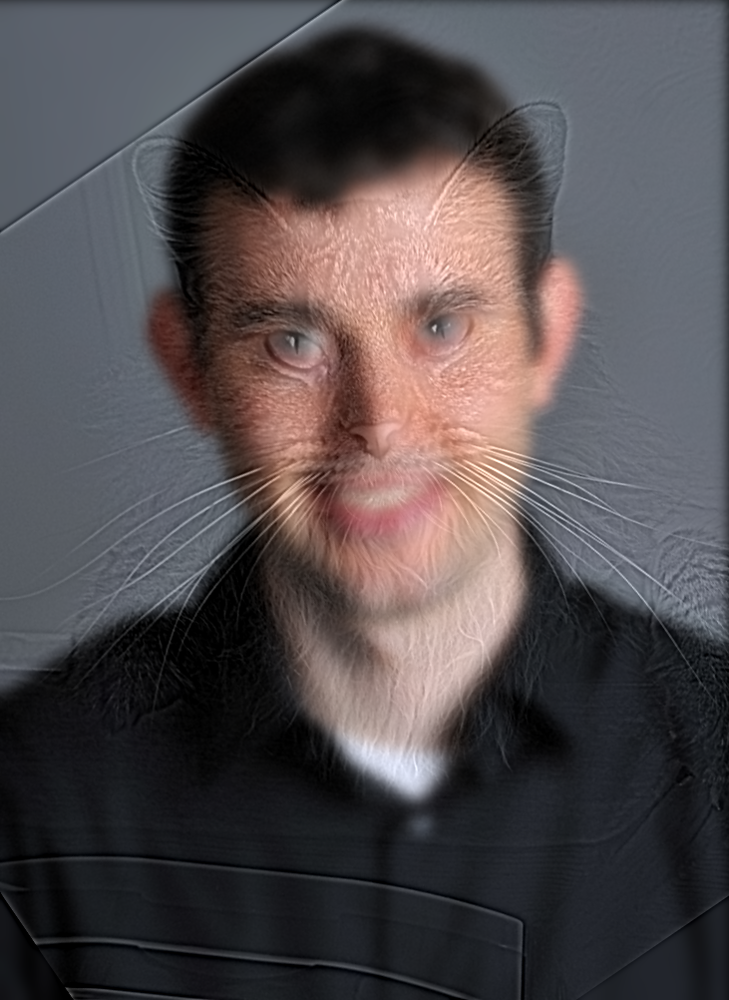
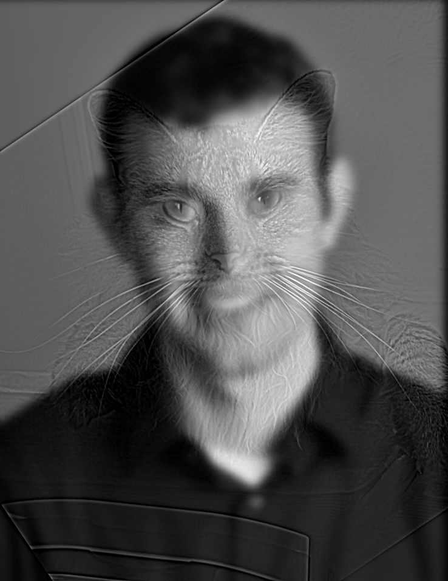
How Color Affects Perception
Color changes the perceptual balance between the two frequency components because its effect depends on spatial scale. When color is retained in the high-frequency component, the cat's colored edges and fine textures appear especially clear at close viewing distances. As the image becomes smaller or is viewed from farther away, however, these fine chromatic variations can no longer be resolved reliably. Rather than disappearing cleanly, they blend with the grayscale low-frequency portrait and may produce a faint colored ghosting effect. When color is instead retained in the low-frequency component, the cat can still be recognized up close because its high-frequency edges remain sharp and prominent even without color. From farther away, those fine details fade while the broad colored regions remain stable, giving the visual system stronger large-scale cues with which to reconstruct the portrait. This generally produces a cleaner and more convincing far-view interpretation. The grayscale hybrid provides a neutral baseline between these two strategies: without chromatic cues in either frequency band, the perceived subject depends entirely on viewing distance, spatial frequency, and contrast. Overall, low-frequency color tends to work best because smooth color regions survive downsampling and distance, whereas high-frequency color is more fragile and more likely to create visible artifacts.
Two Additional Hybrid Images


Part 2.3
Gaussian and Laplacian Stacks
Unlike pyramids, stack levels remain at the original resolution. Successive Gaussian levels retain progressively lower frequencies, while Laplacian levels isolate frequency bands through differences between adjacent Gaussian levels.
Gaussian stack
def gaussian_stack(image, levels, base_sigma):
stack = [image.astype(np.float32)]
for level in range(1, levels):
level_sigma = base_sigma * (2 ** (level - 1))
blurred = gaussian_blur(stack[0], level_sigma)
stack.append(blurred)
return np.stack(stack, axis=0)Laplacian stack
def laplacian_stack(gaussian):
laplacian = np.empty_like(gaussian)
for level in range(gaussian.shape[0] - 1):
laplacian[level] = (
gaussian[level] - gaussian[level + 1]
)
laplacian[-1] = gaussian[-1]
return laplacianWhy Sigma Increases Across Levels
A Gaussian stack keeps every level at the original image resolution, unlike a Gaussian pyramid, which downsamples the image between levels. In a pyramid, applying the same Gaussian kernel after downsampling still produces progressively stronger smoothing when measured in the coordinate system of the original image: after one $2\times$ downsampling step, one pixel spans twice the original distance, so the same kernel has approximately twice the effective standard deviation. To reproduce this scale-space behavior without actually reducing the image size, the stack explicitly increases the blur according to $\sigma_l=\sigma_0 2^{l-1}$. Each level therefore approximates the result of applying the same Gaussian kernel at a successively downsampled pyramid level and then viewing that result at the original resolution. Subtracting adjacent Gaussian levels isolates the frequency content lost between these equivalent scales, producing the corresponding Laplacian bands while preserving identical spatial dimensions at every level.
Apple and Orange Stack Visualization

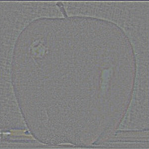
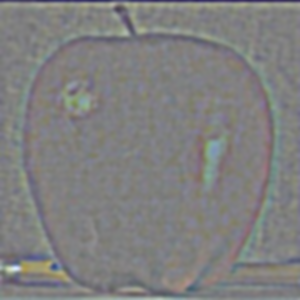
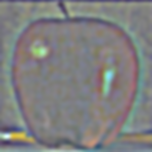
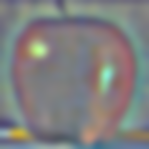

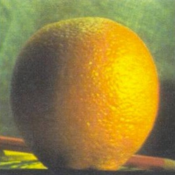

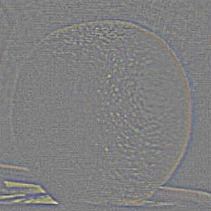
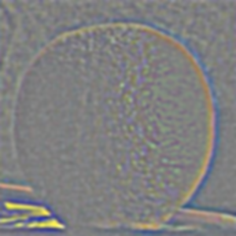
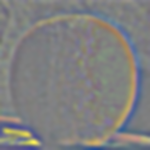
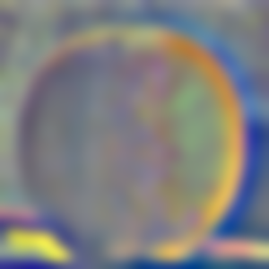
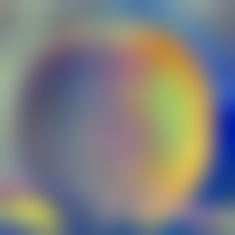
Part 2.4
Multiresolution Blending
At each level, a Gaussian-blurred mask weights the two Laplacian stacks. A Laplacian pyramid is useful for blending because it separates each image into distinct spatial-frequency bands, allowing fine edges and textures to be combined independently from broad color and illumination changes. Direct pixel-domain blending uses a single transition width for every feature and can therefore create visible seams or unnecessarily blurred edges. By blending each frequency band with a mask at the corresponding scale and then combining the resulting bands, multiresolution blending preserves sharp local detail while producing a smooth transition in the low-frequency structure.
Let $L_A^l$ and $L_B^l$ denote level $l$ of the Laplacian stacks for images $A$ and $B$, and let $G_M^l=G_{\sigma_l}*M$ be the corresponding level of the Gaussian mask stack. The two images are blended independently at every scale using element-wise multiplication:
\[L_{\mathrm{blend}}^l=G_M^l\odot L_A^l+\left(1-G_M^l\right)\odot L_B^l.\]
The final image is reconstructed by adding all of the blended Laplacian levels together, including the last level that stores the low-frequency residual.
The Oraple

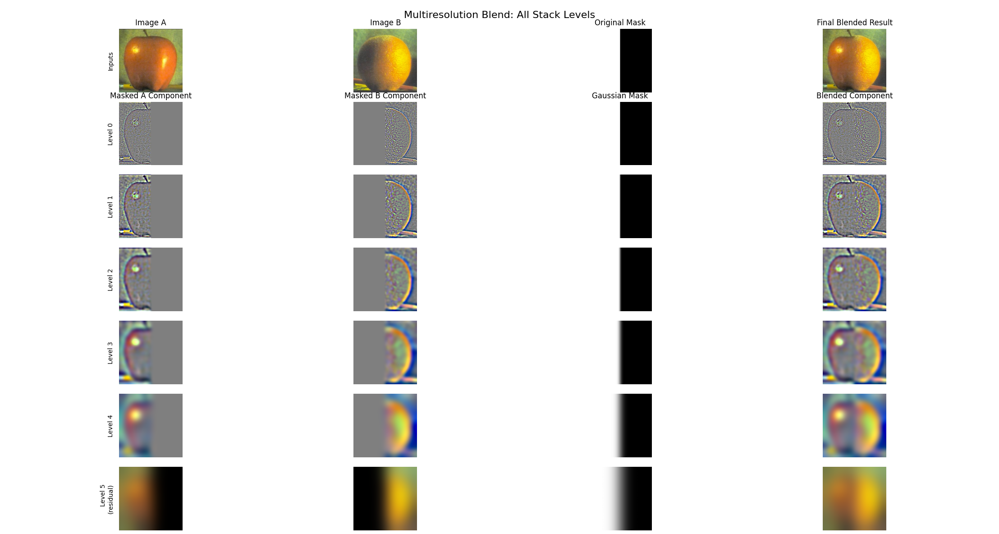
The apple and orange already have similar dimensions, centered positions, and rounded silhouettes, so they are naturally well aligned and require little additional geometric adjustment. This makes a straight vertical mask sufficient: rather than compensating for differences in scale or shape, the blending process only needs to handle the seam where the two fruits meet. Across the Gaussian mask stack, the sharp boundary of the original mask becomes progressively wider and smoother at coarser scales. The corresponding Laplacian bands preserve fine texture near the boundary while allowing color, shading, and illumination to transition over a broader region. After the blended bands are recombined, the center no longer looks like a hard cut, and the change from apple skin to orange peel appears gradual. A small texture difference remains because the apple is relatively smooth while the orange has a visibly dimpled surface, but this contrast reads as a natural transition between the two fruits rather than an alignment error.
Hot Banana
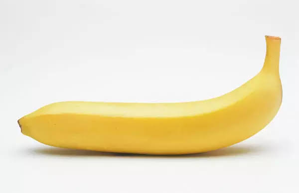
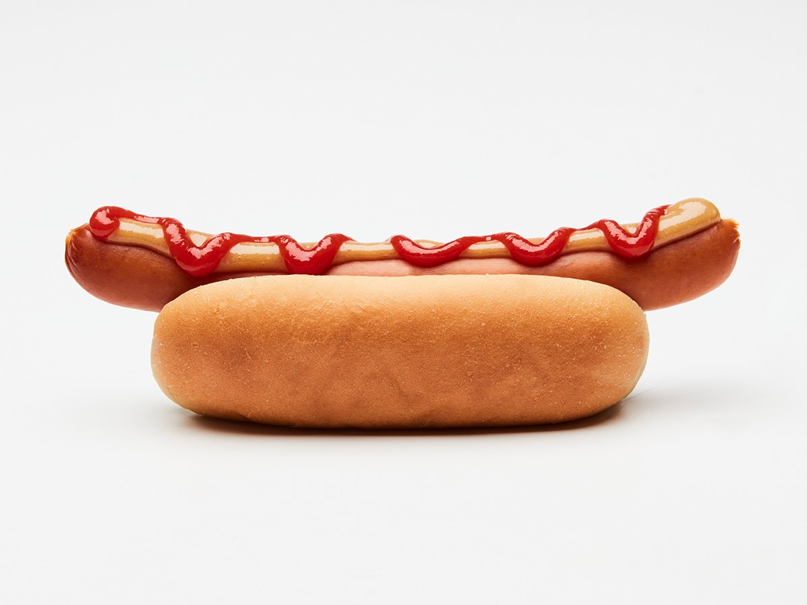
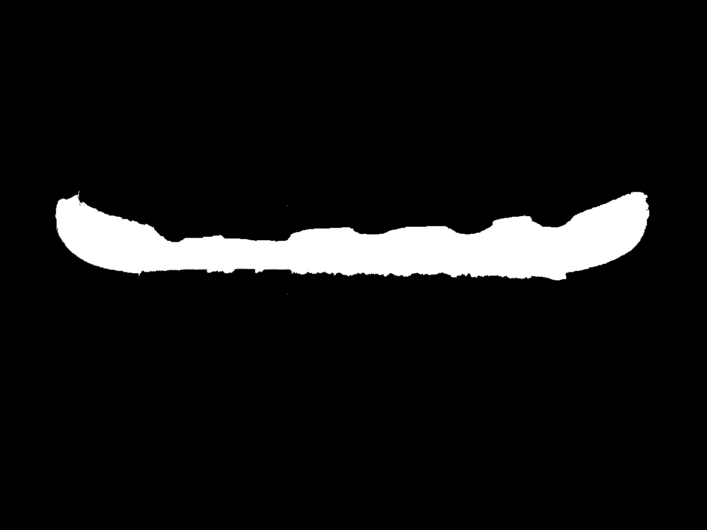
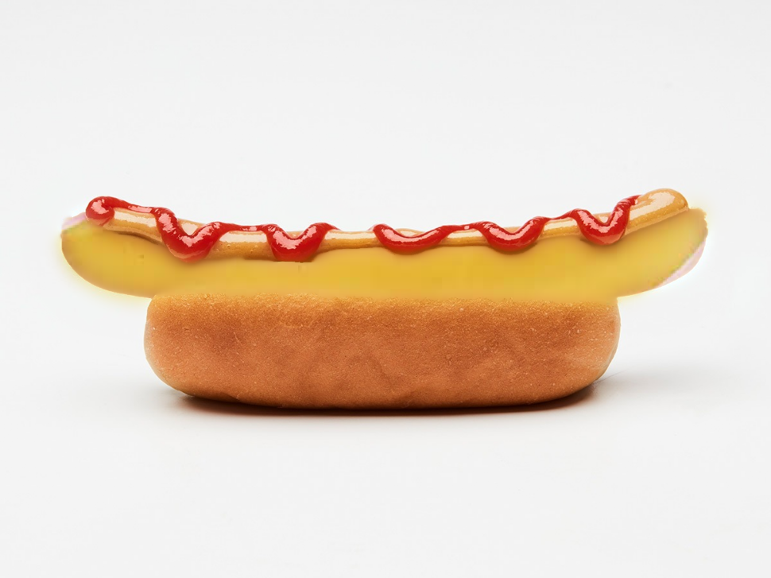
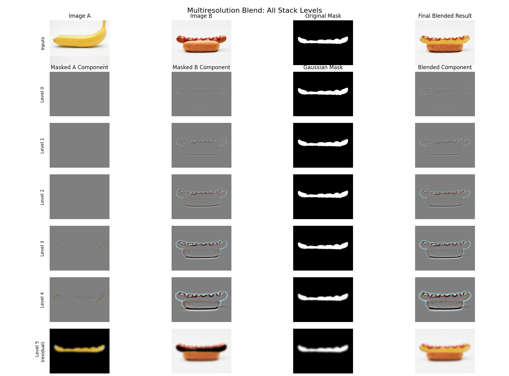
The effect is less visually dramatic than in the Oraple example, primarily because the mask covers only a small, narrow region of the image. I created the irregular mask with Photoshop's selection tool by tracing the exposed sausage above the bun, then used that region to replace the sausage with the aligned banana. Because the banana surface is close to a uniform yellow and contains relatively little fine texture, most of its information lies in the low-frequency residual; consequently, its intermediate Laplacian bands appear faint and contribute mainly along the boundary. In contrast, the sharper edges of the bun and ketchup remain visible in the higher-frequency bands of the hot-dog image. Even though the individual banana bands are not very prominent, the multiresolution strategy still works: the progressively blurred masks distribute the banana's color smoothly at coarse scales while the finer levels preserve the shape of the surrounding bun and ketchup. As a result, the transition between the banana and the bread is softer than a direct cut-and-paste boundary.
Space Train
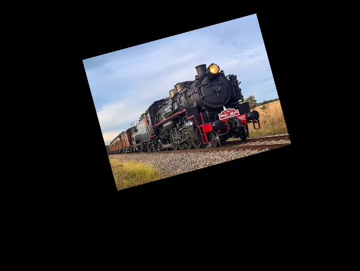
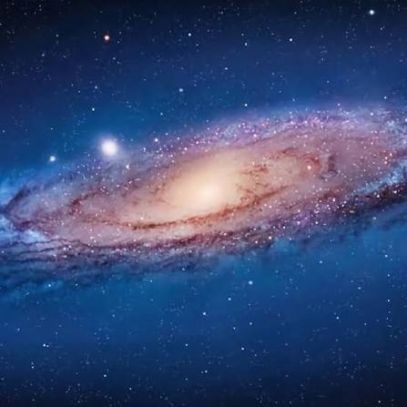
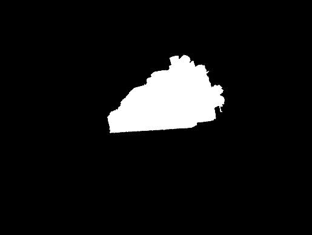
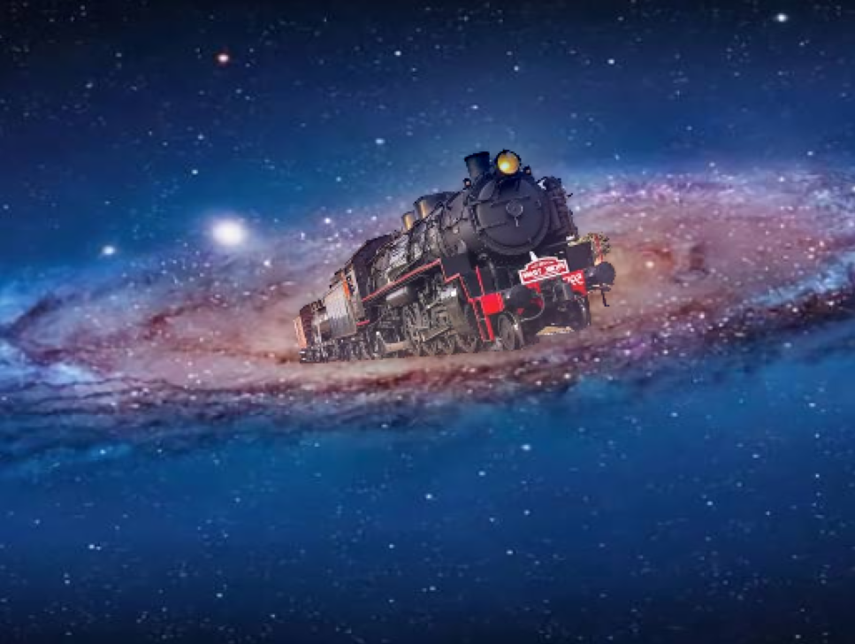
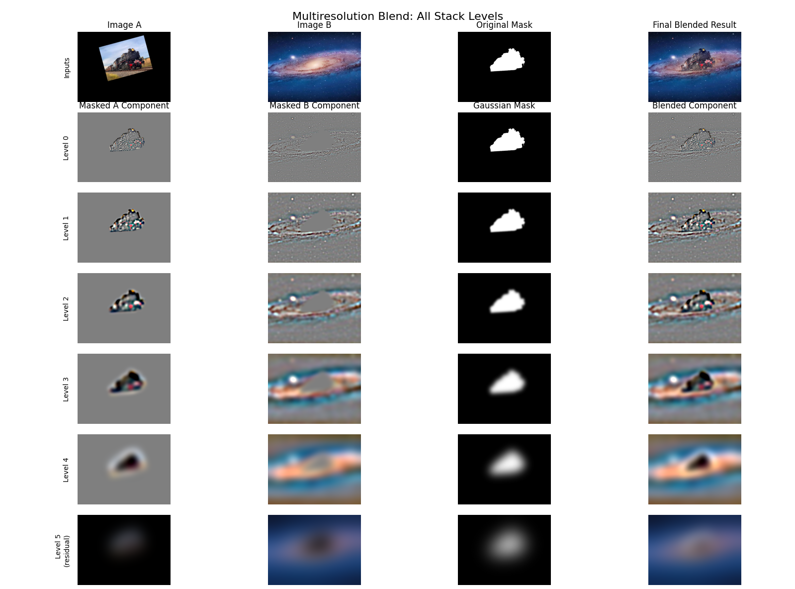
This example also uses an irregular mask that follows the subject's silhouette. To align the train and place it at a specific location in the scene, I first created a new canvas with the same dimensions as the galaxy image. I then rotated, scaled, and translated the train on this canvas until its angle and position matched the bright galactic band. The mask was extracted from this transformed image, ensuring that its outline aligned pixel-for-pixel with the final train placement rather than with the original, untransformed photograph. Compared with the Hot Banana example, the selected region occupies a larger portion of the image and contains much richer edge and texture information, so the train contributes visibly across more Laplacian levels. The larger base $\sigma=3$ also produces a broader low-frequency transition, helping reconcile the train's terrestrial lighting with the blue and magenta tones of the galaxy. In the final result, the train's mechanical details remain sharp, while its outer edges pick up some of the surrounding starlight and color. This subtle color transfer makes the train feel embedded in the galaxy rather than pasted on top of it, and the bright galactic band beneath it provides a convincing visual surface for the train to follow.
Reflection
The Most Important Thing I Learned
Through implementing the filters in this project, I learned that an image contains far more structure than what is immediately visible in the spatial domain. Some operations that seem difficult when working directly with pixels become much more intuitive after a Fourier transform reveals the image's frequency components. By manipulating these components with relatively simple filters, we can control broad shapes, fine details, sharpness, and even which subject is perceived at different viewing distances.
I also learned that a successful result depends on more than the filtering algorithm itself. Parameter selection is strongly connected to visual perception: values such as sigma, cutoff frequency, and sharpening strength must be evaluated by how the resulting image actually looks. Careful preparation is equally important. Choosing compatible source images, accurately aligning their key features, and constructing an appropriate mask can make the later processing much easier and the final result much more convincing. Overall, this project showed me that effective image processing combines mathematical tools with visual judgment and thoughtful input selection.